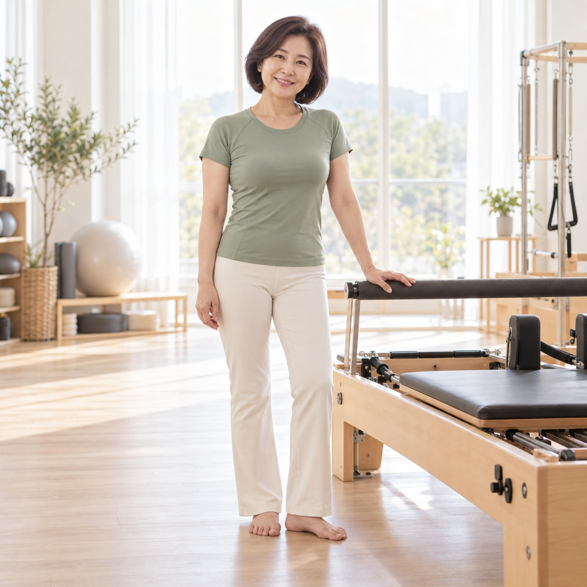

미선 강사
시니어 맞춤 필라테스 전문 — 봄볕 필라테스
안녕하세요, 미선입니다. 저도 사실 마흔이 넘어 처음 필라테스를 배웠어요. 그때 몸이 얼마나 뻣뻣했는지 기억합니다. 그래서 회원님의 마음을 알아요 — '이 나이에 시작해도 되나', '따라갈 수 있을까' 하는 걱정부터 다 들어드려요. 수업은 서두르지 않습니다. 의자에 앉아 숨을 고르는 것으로 시작해, 눕고 일어서고 걷는 동작까지 회원님 속도대로 한 칸씩 나아가요. 60대에 첫 수업이 70대에도 이어지는 것을 제가 많이 봤습니다. 화면 속 동작들을 그대로 천천히 함께 해 보니, 처음 오셔도 뭘 해야 할지 걱정하지 않으셔도 돼요.
첫 운동 회원이 절반 이상 — '시작'을 위한 수업 설계
노인체육지도자 과정 수료 — 무리 없는 강도와 휴식 리듬
균형·보행 훈련 포함 — 일상 동작이 편해지는 게 목표입니다
- 시니어 전용 1:1
- 경기 수원
- 첫 운동 환영
자격 · LICENSES
- 필라테스 매트 지도자 과정국내 공인 교육기관 과정 이수 · 2016.04
- 노인체육지도자 2급문화체육관광부 체육지도자 자격 · 2018.10